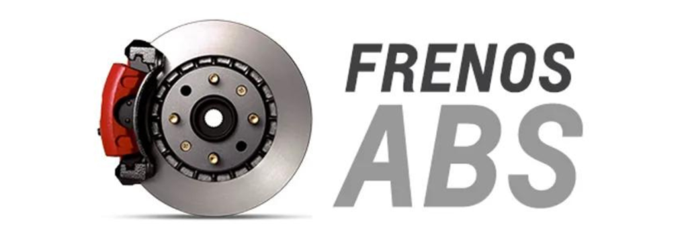

Frenos
Los frenos de auto son cruciales para evitar accidentes. Se usan tanto en el día a día como en emergencias.
Abs
Los sistemas de frenos ABS (Sistema de Frenos Antibloqueo) son una característica de seguridad crítica en la mayoría de los vehículos modernos. Diseñados para prevenir el bloqueo de las ruedas durante una frenada brusca o en superficies resbaladizas, los sistemas de frenos ABS mejoran significativamente la capacidad del conductor de controlar y detener el vehículo de manera segura.
A Disco
Los frenos de disco se encuentran en todos los coches de la actualidad, generalmente en las ruedas delanteras, aunque existen modelos y marcas que prefieren este sistema en las 4 ruedas.